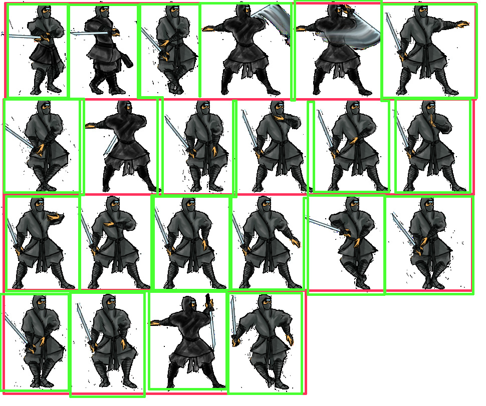

Animación con sprites
Carlos León
cleon@ucm.es
Qué es animar
Animar (de anima) es dar alma, dar movimiento
El siglo XIX
Eadweard Muybridge diseñó un sistema de fotografía en el que, haciendo muchas fotos seguidas con una cámara fija, conseguía que el ojo humano no pudiera distinguir los fotogramas como imágenes separadas sino como movimiento

Figura 1: The Horse in Motion (Wikipedia)

Figura 2: The Horse in Motion animado (Wikipedia)
Con la misma idea, los Hermanos Lumière inventaron el cinematógrafo
Hoy
La idea prácticamente no ha variado
Para crear la sensación de movimiento (animación), reproducimos imágenes en orden, suficientemente rápido
Sprites
Un sprite es una imagen sencilla, única, en 2D
Su origen es parte de la historia del videojuego
Algunas de las primeras máquinas dedicadas a ejecutar juegos tenían hardware dedicado para sprites (aunque no es exactamente el mismo concepto que conocemos ahora)
Esta tecnología de sprite no realizaba cambios en RAM que se volcaban al dispositivo gráfico
Esta es una de las razones por las que los sprites tenían restricciones físicas
Hoy en día, generalmente, hacemos la creación de la escena gráfica (frame) en la RAM y volcamos (blit) al contexto gráfico
Esto nos da una flexibilidad enorme, pero es más lento
Obviamente, esto en irrelevante en términos de eficiencia con el hardware moderno
Sprites hoy
Hoy en día, los sprites son generalmente mapas de bits de cualquier tamaño
En general, usamos formas rectangulares con formatos (razonablemente) estándar
Dado cómo usamos los sprites, el tamaño o el número de colores ya no es, generalmente, un problema
Solemos usar formatos con transparencia explícita
Para ello hace falta un formato que lo acepte (como PNG)

Figura 3: Sprite
También (esto depende del formato de la imagen) podemos usar un color concreto de fondo
Figura 4: Esta idea es muy similar a como funciona un croma
Ya hemos cargado y usado sprites, ahora vamos a ver cómo podemos hacer que esos sprites estén animados
Muchos sprites
Producimos la sensación de animación al reproducir imágenes consecutivas con pequeños cambios secuenciales, suficientemente rápido
Para conseguir esto en videojuegos, simplemente disponemos de varios sprites que representan secuencias de movimientos seguidos, diferenciales

Figura 5: Spritesheet
Una vez que tenemos la información, simplemente tenemos que usarla para dibujar, en un contexto gráfico, los sprites por orden
De la misma manera que el cine
Para hacer esto de forma que el movimiento, la animación, sea convincente, tenemos que asegurarnos de que el reemplazo de una imagen por la siguiente en la secuencia no tenga "fallos"
Estos requisitos los cumplimos manteniendo propiedades básicas entre las imágenes:
- Mismo tiempo por fotograma
- Mismo tamaño de fotogramas
- Mismo fondo
- Misma paleta de colores
- Misma información de transparencia
- Misma localización relativa del sprite en el recuadro
- Misma escala
Si mantenemos esos requisitos (lo cual no es técnicamente necesario), el programa que procese la información para representarla por pantalla podrá ser sencillo
// asumimos tiempo fijo entre frames
// el tamaño y la posición del personaje: fijos
let width = 10, height = 10;
let tiempo_entre_frames = 0.01;
let frames = [frame1, frame2, frame3, ..., frame_n];
let x = 10, y = 10, frames_por_ciclo = frames.length;
while(true) { // repite la animación indefinidamente
for(let frame_actual = 0;
frame_actual < frames_por_ciclo;
frame_actual++) {
let frame_que_pinto = frames[frame_actual];
pintar_frame(frame_que_pinto, width, height, x, y);
esperar(tiempo_entre_frames);
}
}
Spritesheets
Es generalmente cómodo y fácil tener todos los frames de una animación en un solo recurso
Podemos usar un atlas de imagen en el que cada imagen sea un frame de la animación
Frames
Un frame, como hemos visto, es cada una de las imágenes que serán representadas en una animación
Generalmente se representa cada frame seguido del siguiente
Varios frames forman un ciclo
Ciclos
Un recurso de animación puede contener varios ciclos de animación
Normalmente, una entidad en un videojuego puede hacer varias cosas, de forma que necesitará una animación para representar cada una de ellas
- Andar
- Saltar
- Agacharse
- Disparar
Cada una de estas acciones se representa en animación con lo que llamamos ciclo
Un ciclo es una secuencia ordenada de frames que representan un movimiento continuo
Los ciclos pueden ser:
- Cíclicos: diseñados para que, cuando se acabe el último frame, empiece el siguiente (andar)
- Simples: diseñados para que se quede en un estado estacionario (morir)
Combinando frames y ciclos
Para combinar frames y ciclos solemos usar una disposición en rejilla
Así, cada fila es un ciclo, y cada columna es un frame del ciclo
Figura 6: Spritesheet
Es importante notar que los ciclos no tienen que tener todos los mismos frames
Desde el código, o exportando datos adicionales, se carga la información de:
- El tamaño de cada frame
- Qué ciclos hay
- Los frames de cada ciclo
Fijémonos en que el tamaño de frame es distinto en esta imagen: no es cómodo, pero es posible: habría que indicarlo desde código u otro recurso (un JSON)

Figura 7: Frames (verde) y ciclos (rojo)
Reusar ciclos
Cuando un personaje en 2D se mueve, es muy normal que pueda hacerlo en varias direcciones
Así, en una vista de arriba a abajo, es de esperar que el personaje pueda ir hacia la izquierda, derecha, arriba y abajo
Si tenemos un ciclo de animación en el que el personaje puede ir en una dirección, no tenemos por qué dibujarlo yendo en la contraria, ya que podemos aprovechar la simetría
Haciendo esto, hacemos la imagen espejada por software y la usamos como el ciclo de animación correspondiente
Enlazando los ciclos
Cuando se crean ciclos, es de esperar que, en el videojuego, se pase de uno a otro de manera "suave"
Esto quiere decir (con un ejemplo práctico) que el personaje tiene que pasar del ciclo de salto al ciclo de andar de una manera fluida
Para hacer esto, se aplica un poco de artesanía al dibujo del sprite, y se pueden aplicar algunas (o varias) de estas técnicas, entre otras:
- se dibujan los principios y finales de las ciclos de manera que sean "neutros" (el personaje en una postura que dé lugar a otros ciclos),
- o se asume un estilo de sprite animado en el que la transición se muestra muy bruscamente,
- o se hacen diferentes ciclos de transición:
- se activa andar,
- cuando se deja de andar, se pasa a un ciclo de "parándose", que no es cíclico,
- cuando se termina el estado "parándose", se puede activar la animación de "quieto" de forma natural;
- o se anima por huesos (no lo veremos hoy) y se hace la transición de otra forma
Animación en Phaser
Phaser permite animar mediante secuencias de frames y ciclos
Cargar un spritesheet
Con spritesheet:
// En el preload
this.load.spritesheet('mummy',
'mummy.animated.png',
{ frameWidth: 64, frameHeight: 64 });
// En el create
this.add.sprite(200, 360, 'mummy');
Establecer un ciclo de animación
Se pueden crear ciclos de animación con el AnimationManager
// Como 'mummy' es un spritesheet, puede identificar los frames
// this es Scene
this.anims.create({
key: 'standing_mummy',
frames: this.anims.generateFrameNumbers('mummy', { start: 0, end: 5 }),
frameRate: 2, // Velocidad de la animación
repeat: -1 // Animación en bucle
});
Comenzar y detener la animación
Con play() se ejecuta una animación:
// `this` es un `Sprite` en la misma escena
// que se ha creado la animación
this.play('standing_mummy');
play puede usar un segundo parámetro para indicar si queremos que se ignore si la animación ya estaba activada
Para parar una animación, con stop():
// `this` es un `Sprite`en la misma escena
// que se ha creado la animación
this.stop();
Eventos en animaciones
Es posible hacer "callbacks" para ser informados de cuándo una animación se pone en marcha o se detiene usando los eventos de animación:
// `this` es un `Sprite`en la misma escena
// que se ha creado la animación
this.on('animationrepeat-standing_mummy', () => {
// hacer algo
});
Más cosas con animaciones por frames
Con chain('clave') se pueden encadenar animaciones, de forma que al terminar una empiece otra
Para establecer si se reinicia la reproducción de la animación, usamos play(), con un booleano adicional:
sprite.play('walk', true);
sprite.play('walk', false);
Cuando animamos una clase que hereda de Sprite, hay que llamar al preUpdate(t, dt) del padre (de Sprite) para que se produzca la animación:
class Player extends Phaser.GameObjects.Sprite {
preUpdate(t, dt) {
super.preUpdate(t, dt)
// ... resto de cosas
}
}
Atlas
Un atlas es un archivo de imagen que contiene varias texturas diferentes
Una de las ventajas es que una sola textura en memoria es usada para hacer render de varios objetos, y esto mejora mucho el rendimiento
El problema es que son más laborioso de mantener
Los atlas pueden ser de imágenes del mismo tamaño, o de tamaños diferentes
Si son de tamaños diferentes, hay que adjuntar información sobre qué área de la textura corresponde a cada imagen
{kind=link}
Para cargar un atlas en Phaser, le damos un identificador, un archivo con la textura, y un JSON con la información de cómo está dividida la textura.
this.load.atlas('cosas', 'cosas.png', 'cosas.json');
Y, después, podemos usar ese atlas como cualquier spritesheet:
this.anims.create({
key: 'enemigo_andar',
frames:
this.anims.generateFrameNames('cosas', {prefix:'prefijo_en_json'}),
repeat: -1 });
this.add.sprite(400, 300, 'cosas');
Hay aplicaciones web que permiten la creación de atlas para Phaser:
Es importante, al exportar el JSON, añadir el prefijo prefijo_en_json, que se puede sacar del JSON generado (en filename, y quitando los números):
this.anims.generateFrameNames('cosas', {prefix:'prefijo_en_json'})